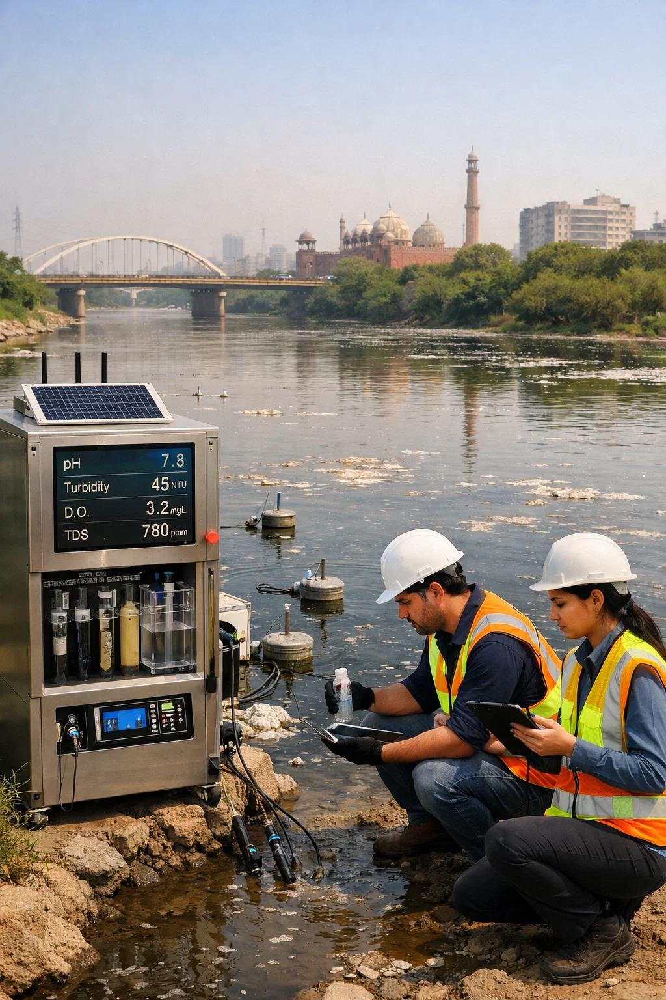

Water Quality Monitoring System in Delhi: CPCB & DPCC Guidelines

Delhi, one of India’s most densely populated and industrially active regions, faces growing challenges related to water pollution, wastewater discharge, and groundwater contamination. To safeguard the Yamuna River, city drains, and underground water sources, regulatory authorities have implemented strict water quality monitoring regulations for industries, treatment plants, and commercial establishments.
This blog explains CPCB & DPCC guidelines for water quality monitoring systems in Delhi, key compliance requirements, and how Agua Instruments supports organizations in meeting these norms efficiently and reliably.
Why Water Quality Monitoring Is Critical in Delhi
Delhi’s water ecosystem is under continuous pressure due to:
- High industrial concentration
- Large residential and commercial wastewater generation
- Limited natural groundwater recharge
- Strict enforcement by regulatory authorities
Untreated or inadequately treated effluent directly impacts rivers, city drains, groundwater quality, public health, and urban sustainability. To address these risks, continuous, transparent, and online water quality monitoring has become mandatory for many facilities operating in Delhi.
CPCB & DPCC Guidelines for Water Quality Monitoring in Delhi
1. Mandatory Online Monitoring (OCEMS)
Industries categorized under Red and Orange categories are required to install Online Continuous Effluent Monitoring Systems (OCEMS).
- Continuous measurement of effluent parameters
- Automatic, real-time data transmission to regulatory servers
- Tamper-proof monitoring systems
- Live data accessibility for inspections
2. Parameters Mandated for Monitoring
Based on industry type and consent-to-operate conditions, commonly monitored parameters include:
- pH
- BOD (Biochemical Oxygen Demand)
- COD (Chemical Oxygen Demand)
- TSS (Total Suspended Solids)
- Flow
- Conductivity
- Oil & Grease
- Ammonical Nitrogen
3. Approved Analyzers & Sensors
Only approved online water analyzers and industrial-grade sensors are permitted for compliance monitoring. These systems must deliver accurate readings, perform reliably in harsh environments, and prevent data manipulation.
4. Data Transmission & Cyber Security
OCEMS installations must transmit live data using secure communication methods and maintain uninterrupted connectivity. Any data gap or communication failure may be treated as a compliance violation.
5. Power Backup & System Availability
Continuous power supply, backup arrangements, and 24×7 system uptime are mandatory to ensure uninterrupted monitoring and data availability.
What Is a Water Quality Monitoring System?
A typical water quality monitoring system consists of online analyzers, industrial-grade sensors, a data logger, communication modules, and server integration. This enables continuous, automated, and tamper-proof monitoring of effluent discharge.
Challenges Faced by Industries in Delhi
- Frequent inspections and audits
- Limited space for analyzer installation
- Power and network connectivity challenges
- High compliance pressure
Agua Instruments – Water Quality Monitoring Solutions for Delhi
Agua Instruments offers advanced online water quality monitoring systems designed to meet compliance requirements efficiently and reliably.
- Online COD & BOD analyzers
- pH, TSS, Flow & Conductivity sensors
- Multi-parameter water quality analyzers
- Online gas analyzers for emission monitoring
- Complete OCEMS integration
Why Choose Agua Instruments?
- CPCB & DPCC-compliant system configurations
- High-accuracy and durable analyzers
- Seamless real-time data transmission
- End-to-end installation, commissioning & AMC support
- Proven compliance expertise across Delhi NCR
Conclusion
With strict regulations in place, water quality monitoring systems are mandatory in Delhi for many industries and facilities. Continuous, real-time monitoring ensures compliance, environmental protection, and operational efficiency.
Agua Instruments — Precision Monitoring. Environmental Responsibility. Sustainable Future.